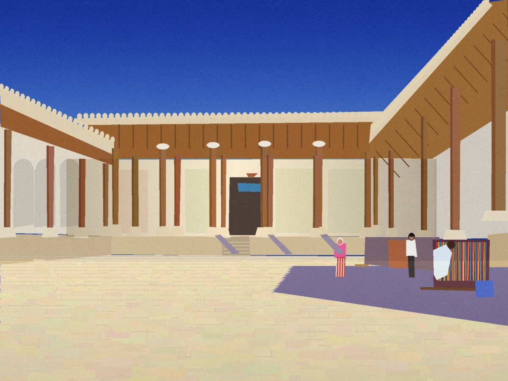

<meta charset=utf-8><meta name=viewport content="width=device-width,initial-scale=1"><title>The woman in pink, crossing</title>
<style>body{margin:0;background:#ece6d6;color:#1e1c1a;font-family:Georgia,serif}main{max-width:640px;margin:2rem auto;padding:0 5vw;line-height:1.6}img{max-width:100%;display:block;margin:1.5rem 0}p{margin:0 0 1.1rem}</style>
<main>

<p>She is the smallest thing in the picture I painted and the only one that is walking. In the photograph she has a scarf over her hair that is almost the colour of her shirt, and striped trousers, red on white, and a bag held against the hip as you hold something you have been told about. I could not tell you where she was going. I painted her with a rectangle for a body. I want to say what she was thinking, and I know I am allowed, because nobody can check, and because she will never read it.</p>
<p>So. She is thinking about the shade. Not the shade she is walking toward, the shade she left, a minute and some forty steps behind, where the stalls are and the men are and someone said a price twice. The pavement is the colour of bread and it is hot through the shoe. She has counted the posts on the far side, because the posts are the only thing in this square that can be counted: she gets seventeen, then the light changes and she gets fifteen, and she thinks, they have been standing here longer than anyone who ever lied about them, and the wood is cracked in the same direction as her mother's hands.</p>
<p>She is not a tourist and she is not not one. Her phone is in the bag with a charger that doesn't fit it. She is thirty-one or fifty. She stopped, once, at the stairs in the middle of the back wall, where the throne was, and did not go up, because the stairs went up to nothing, a door with blue tiles in it that has been shut since before the thing she is thinking of. What she is thinking of is a bowl of cherries left on a windowsill in another city, which will be gone by the time she gets back, eaten by whoever lives there now, and this seems to her not a loss but a kind of arithmetic.</p>
<p>The shadow with the sawtooth edge is the shadow of the parapet; its teeth are the teeth along the roof. She walks beside it and not in it. It is cool in there and she would like to be cool, but the shadow is where the men are, and the men are where the prices are, so she stays in the sun, which is free, which is enormous, which does not ask her anything. I painted the sun as a lack of paint, a pale floor nobody made an effort on. She is crossing it. It takes her about as long as it takes you to read this, and then she is somewhere else, and the picture goes on being a square with three small people in it, and one of them, I swear, has already gone.</p>
<p><a href="index.html">Back</a></p>
</main>
